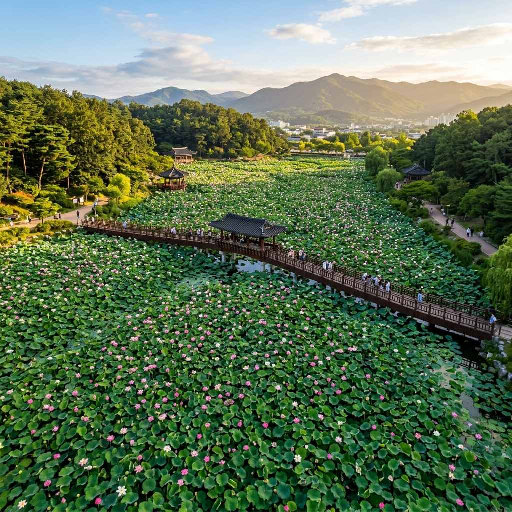
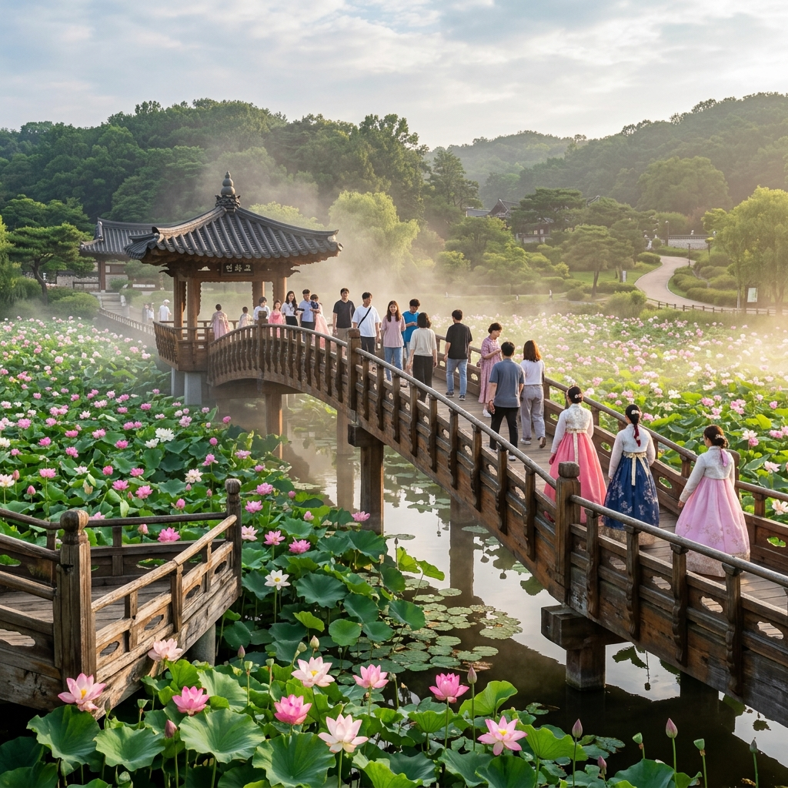
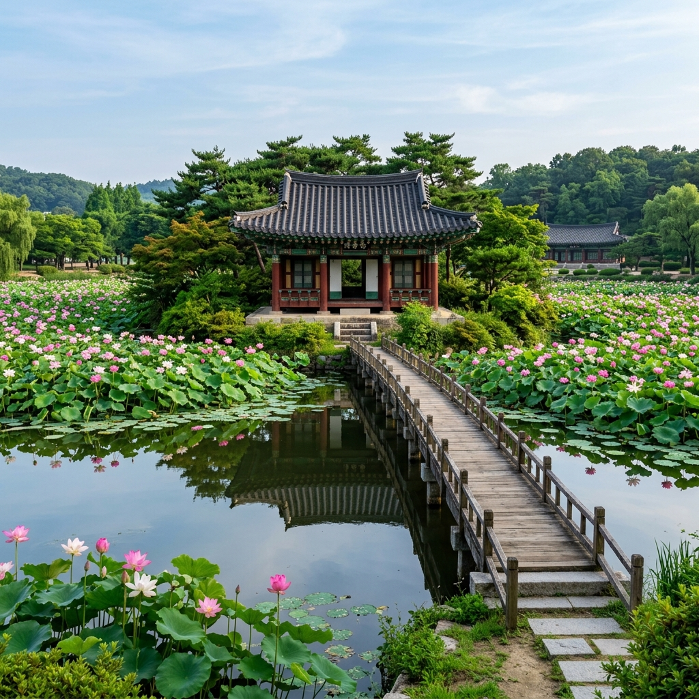

전주 덕진공원 연꽃 절정 시기와 연화교 산책 코스, 주차 정보
전라북도 전주 시내 한가운데 이토록 넓은 연꽃 연못이 있다는 사실이 처음엔 믿기지 않습니다.
덕진공원은 고려 시대에 조성된 덕진연못을 중심으로, 여름이면 수면 가득 연꽃이 피어나는 전주 대표 도심 힐링 명소입니다.
입장료가 없고 24시간 개방되어 있으며, 무료 주차장도 마련되어 있어 부담 없이 찾아갈 수 있습니다.
연꽃이 가장 아름다운 7월 초중순에 맞춰 방문하면 연화교 위에서 연꽃 바다를 발 아래 두는 특별한 경험을 하실 수 있습니다.
이 글에서는 연꽃 절정 시기부터 산책 코스, 주차 정보, 전주 한옥마을 연계 동선까지 꼼꼼하게 안내해 드립니다.

전주 덕진공원 연꽃 만개 전경과 연화교 / AI 제작 이미지
01. 덕진공원, 전주 도심에 피어나는 연꽃 천국
전주 덕진공원은 전북특별자치도 전주시 덕진구에 위치한 도심형 공원으로, 면적 약 10만㎡에 달하는 덕진연못을 품고 있습니다.
이 연못의 역사는 고려 시대까지 거슬러 올라가며, 조선 시대에는 전주 사람들의 휴식 공간이자 풍수적 요충지로 여겨졌습니다.
지금은 연꽃 명소로 전국적인 명성을 얻고 있으며, 매년 여름이면 연꽃 사진을 찍으러 전국 각지에서 방문객이 몰려듭니다.
공원 내에는 연화교를 비롯해 취향정, 현수교, 연화정도서관, 어린이 놀이 시설 등 다양한 볼거리가 들어서 있어, 연꽃 감상 외에도 반나절 이상 즐길 거리가 충분합니다.
특히 이른 아침에 방문하면 안개 속에 연꽃이 피어오르는 몽환적인 풍경을 마주할 수 있어, 사진 작가들 사이에서도 손꼽히는 출사지로 꼽힙니다.
도심 안에 이만한 규모의 자연 연못이 있다는 것 자체가 전주라는 도시의 큰 자산이라 할 수 있습니다.
02. 연꽃 절정 시기 — 언제 가야 가장 아름다울까
덕진공원 연꽃은 보통 6월 말부터 개화가 시작되어, 7월 초중순에 절정을 맞이합니다.
연꽃은 아침 일찍 피었다가 오후가 되면 오므라드는 특성이 있어, 가장 아름다운 모습을 보려면 오전 6시~10시 사이에 방문하시는 것을 강력히 권장합니다.
오전 햇살이 연꽃 꽃잎에 걸리는 시간대에는 분홍빛과 흰빛이 어우러지며 연못 전체가 환하게 빛나는 장면을 볼 수 있습니다.
연꽃의 개화 속도는 그해 기온과 일조량에 따라 다소 달라질 수 있으니, 방문 1~2주 전에 전주시 공식 SNS 또는 블로그 실시간 후기를 확인하시는 것이 좋습니다.
7월 중순이 지나면 꽃잎이 지기 시작하고 연밥이 맺히는 모습으로 변해 가는데, 이 시기에도 녹색 연잎과 연밥의 조화가 나름의 운치를 선사합니다.
8월 초까지는 일부 연꽃이 남아 있는 경우가 많으므로, 7월 방문이 여의치 않다면 7월 말을 목표로 잡아도 충분히 아름다운 풍경을 보실 수 있습니다.
03. 연화교 위에서 내려다보는 연꽃 바다
덕진공원의 하이라이트는 단연 연화교(蓮花橋)입니다.
연화교는 덕진연못 위를 가로지르는 아치형 다리로, 다리 위에서 내려다보면 연못 가득 핀 연꽃이 마치 분홍빛 카펫처럼 펼쳐집니다.
다리 길이는 길지 않지만, 양쪽에서 바라보는 풍경이 각기 다른 매력을 지니고 있어 왕복으로 천천히 걷는 것을 권합니다.
특히 연화교 중간 지점에서 아침 햇살을 받으며 사진을 찍으면 SNS에서 흔히 볼 수 있는 덕진공원 대표 사진이 완성됩니다.
연화교 주변에는 목재 산책로도 조성되어 있어, 연꽃과 수면을 코앞에서 감상할 수 있습니다.
연꽃이 만개한 시기에는 연화교 위에서 연꽃 향기도 은은하게 느껴지니, 눈뿐 아니라 코로도 여름 덕진공원을 만끽해 보시기 바랍니다.

덕진공원 연화교와 연꽃 풍경 / AI 제작 이미지
04. 덕진공원 산책 코스 추천
덕진공원은 크게 연못 중심 코스와 외곽 산책로 코스로 나누어 걸을 수 있습니다.
기본 코스 (약 60~80분): 정문 입구 → 연화교 → 취향정 → 연못 외곽 목재 데크 → 현수교 → 정문 복귀.
이 코스를 천천히 걸으면 연꽃을 다양한 각도에서 감상할 수 있으며, 사진 찍기 좋은 포인트도 곳곳에 있습니다.
여유 있는 코스 (약 100~120분): 기본 코스 + 연화정도서관 방문(10:00~19:00 운영) + 어린이 놀이 시설 구경.
어린이와 함께 방문한다면 연화정도서관과 놀이 시설까지 들러 2시간 정도 충분히 즐길 수 있습니다.
취향정은 연못 안쪽 작은 섬에 세워진 정자로, 연꽃에 둘러싸인 정자 사진을 찍을 수 있는 덕진공원의 또 다른 명소입니다.
체력이 좋다면 덕진공원 남쪽으로 이어지는 전주천 산책로까지 걸음을 넓혀 보시는 것도 좋습니다.
05. 덕진연못 생태 이야기 — 연꽃 외에 무엇이 있나
덕진연못에는 연꽃 외에도 다양한 생명이 살아 숨 쉽니다.
수면 위를 가로지르는 왜가리와 백로를 심심치 않게 볼 수 있으며, 운이 좋으면 물총새가 먹이를 낚아채는 순간을 포착하는 기쁨도 맛볼 수 있습니다.
연꽃의 학명은 Nelumbo nucifera로, 진흙 속에서 뿌리를 내리고 깨끗한 꽃을 피운다는 상징성 때문에 예부터 군자의 꽃으로 불려 왔습니다.
연꽃은 수질 정화 능력도 뛰어나 덕진연못의 수질 유지에 기여하고 있으며, 연잎은 비가 내릴 때 물방울이 또르르 굴러 내리는 연화 효과로도 유명합니다.
가을로 접어들면 연꽃이 지고 연밥(연꽃 씨앗이 든 꼬투리)이 연잎 위로 솟아오르는데, 이 가을 풍경도 독특한 매력을 지닙니다.
겨울에는 마른 연대가 연못 위에 서 있는 모습이 수묵화 같은 분위기를 연출해, 사계절 내내 다른 얼굴을 보여 주는 것이 덕진공원의 진정한 가치입니다.
06. 덕진공원 입장료와 운영 시간
덕진공원은 연중무휴 24시간 무료로 개방되어 있습니다.
입장권을 구매할 필요가 없으며, 별도의 예약 절차도 필요 없습니다.
공원 내 연화정도서관은 오전 10시부터 오후 7시까지 운영되며, 도서관 내부에서 책을 읽으며 연꽃을 감상하는 특별한 경험도 가능합니다.
다만 연꽃 절정기인 7월 초중순 주말에는 방문객이 크게 늘어 연화교 위가 혼잡할 수 있습니다.
혼잡을 피하고 싶다면 평일 이른 아침(오전 7시 이전)을 추천합니다. 이 시간대는 방문객이 적고 연꽃이 막 피어나는 가장 아름다운 순간을 독차지할 수 있습니다.
공원 내 음식물 반입은 허용되지 않으므로, 간식이나 음료는 공원 입구 주변의 카페를 이용하시는 편이 좋습니다.

덕진공원 취향정과 연꽃으로 둘러싸인 풍경 / AI 제작 이미지
07. 주차 정보 — 무료 주차 어디서 하나
덕진공원은 무료 주차장이 여러 곳 마련되어 있어 자가용으로 찾아가기 편리합니다.
가장 이용하기 좋은 곳은 덕진공원 후문 주차장으로, 연화교와 가까운 위치에 있어 접근성이 좋습니다.
또한 어린이회관 근처 무료 주차장도 이용 가능하며, 주말 절정기에는 두 주차장이 모두 만차가 될 수 있으니 조금 일찍 도착하시는 것이 안전합니다.
공원 주변 도로에는 불법 주차를 단속하는 경우가 있으니, 지정 주차장을 이용하시기 바랍니다.
대중교통으로는 전주 시내버스를 이용해 덕진공원 정류장 하차 후 도보로 바로 접근 가능합니다.
전주역이나 전주 고속버스터미널에서 출발하는 버스 노선이 여럿 있으므로, 차 없이 전주를 방문하는 여행객도 쉽게 찾아갈 수 있습니다.
💡 주차 꿀팁
연꽃 절정기(7월 초중순) 주말에는 오전 7시 이전에 도착하면 주차 걱정 없이 여유롭게 관람할 수 있습니다.
오전 9시 이후에는 주차 공간 확보가 어려울 수 있으니 참고하세요.
08. 전주 한옥마을과 연계 1일 코스
덕진공원은 전주 한옥마을에서 차로 약 15분, 대중교통으로 20~25분 거리에 위치해 있어 하루 여행 코스로 묶기 좋습니다.
추천 1일 코스: 오전 — 덕진공원 연꽃 감상 (이른 아침 방문 권장) → 점심 — 전주 시내 콩나물국밥 또는 한식 → 오후 — 전주 한옥마을 경기전·전동성당 탐방 → 저녁 — 남부시장 야시장 또는 막걸리 골목.
전주 콩나물국밥은 연꽃 산책 후 이른 아침 식사로 더할 나위 없는 조합입니다. 덕진공원 주변에도 전통 콩나물국밥 식당이 몇 곳 있습니다.
전주 한옥마을은 700여 채의 한옥이 밀집해 있는 국내 최대 한옥 주거 단지로, 한복 대여 체험과 전통 간식 거리가 풍부합니다.
시간이 넉넉하다면 전주 마이산, 모악산 등 인근 자연 명소로 발길을 넓힐 수도 있습니다.
전주는 1박 2일 일정으로 여유 있게 돌아보는 도시 여행지로 강력 추천할 만하며, 비빔밥을 비롯한 전주 10미(美)를 두루 맛보는 미식 여행과도 잘 어울립니다.
09. 연꽃 사진 잘 찍는 팁
덕진공원에서 인생샷을 남기고 싶다면 몇 가지 요령을 기억해 두시면 좋습니다.
첫째, 오전 일찍 방문하세요. 연꽃은 오전에 피었다가 오후에 오므라드는 1일 개폐 사이클을 갖고 있습니다. 꽃잎이 활짝 벌어진 모습을 담으려면 오전 6시~10시가 최적입니다.
둘째, 연화교를 배경으로 활용하세요. 아치형 연화교를 프레임 안에 함께 넣으면 구도가 훨씬 풍성해집니다. 연화교 중간 지점에서 낮은 앵글로 촬영하면 연꽃과 다리, 하늘이 모두 담깁니다.
셋째, 물방울이 맺힌 연잎을 노리세요. 아침 이슬이나 전날 내린 비로 연잎 위에 물방울이 굴러다니는 장면은 매크로 렌즈나 스마트폰 접사 모드로 찍으면 매우 인상적인 사진이 됩니다.
넷째, 다양한 앵글을 시도하세요. 연화교 위에서 아래를 내려다보는 각도, 목재 데크에서 연꽃 수면과 같은 높이로 찍는 앵글 등을 활용하면 평범한 연꽃 사진과 차별화됩니다.
스마트폰으로도 충분히 좋은 사진을 찍을 수 있으나, 광각 렌즈가 있다면 연꽃 군락의 광활함을 더 잘 표현할 수 있습니다.
10. 덕진공원 주변 맛집과 카페
덕진공원을 찾는 여행객들이 즐겨 찾는 주변 맛집과 카페를 간단히 소개합니다.
공원 근처에는 전주 특유의 콩나물국밥 식당이 여러 곳 있으며, 이른 아침부터 운영하는 곳이 많아 연꽃 사진 촬영 후 든든히 한 끼 해결하기 좋습니다.
전주 현지인들이 즐겨 찾는 콩나물국밥은 뚝배기에 진하게 우린 국물과 아삭한 콩나물이 들어가 있으며, 보통 7,000~9,000원 선에서 즐길 수 있습니다.
카페는 덕진공원 인근 골목에 감각적인 인테리어의 카페가 몇 곳 있으며, 공원 산책 후 시원한 음료 한 잔 마시기 좋습니다.
전주 한옥마을 쪽으로 이동하면 더 다양한 식당과 카페가 있으니, 덕진공원 방문 후 한옥마을 쪽으로 이동하는 코스를 추천합니다.
전주 여행의 필수 코스인 전주비빔밥, 막걸리, 초코파이 등은 한옥마을 인근에서 맛볼 수 있습니다.
11. 방문 전 체크리스트
덕진공원 방문 전에 아래 사항을 확인해 두시면 더욱 알찬 여행이 됩니다.
① 개화 현황 확인: 방문 1~2주 전에 전주시 공식 SNS나 블로그 실시간 후기에서 연꽃 개화 상황을 체크하세요. 기온에 따라 절정 시기가 1~2주 앞뒤로 달라질 수 있습니다.
② 방문 시간: 오전 6시~10시가 연꽃이 가장 아름다운 시간대입니다. 오후에는 꽃잎이 오므라드는 경우가 많습니다.
③ 복장과 준비물: 여름 햇볕이 강하므로 모자와 선글라스, 선크림은 필수입니다. 목재 데크를 걷는 경우가 많으니 편한 신발도 챙기세요.
④ 주차 출발 시간: 주말 절정기에는 오전 7시 이전에 출발해 일찍 주차 공간을 확보하는 것이 좋습니다.
⑤ 음식물 반입: 공원 내 음식물 반입이 제한될 수 있으므로 음료와 간식은 공원 입구 밖에서 해결하거나, 공원 내 지정 구역을 확인하고 이용하세요.
#전주덕진공원
#덕진공원연꽃
#전주여행
#연꽃명소
#연화교
#전주7월
#전주공원
#연꽃절정
#전북여행
#도심연꽃